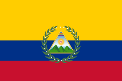
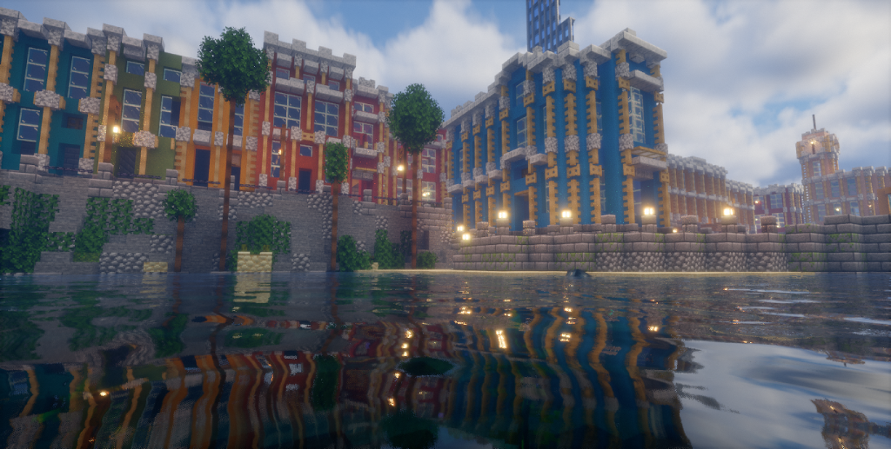

Central America
Tegucigalpa
Was its own beautiful country before it came under Colombia as the Central American region. Still the anchor on the isthmus, the claim that makes Central America real on the map.
DiplomaticaMC · The Caribbean Seat
A nation on the Minecraft server DiplomaticaMC, built the way the real one was, from the coast outward. Maicao runs the markets, the towns run the frontier, and everyone shows up when it counts.

Plus Ultra, further beyond
Seat of the Crown
Main claim on the water. Streets and façades up top; under them, the mall, shops, chests, the gold that pays town grants. The capital of one of the most prestigious countries in Latin America.

Shoreline streets, lit windows, the square people actually use. Cartagena colour on a Minecraft budget, not a warehouse grid.
Down the stairs: player shops and storage. Rare gear, daily trade, and the treasury that keeps the Empire running.
Claims Across Two Regions
Each claim has a job. Flip through the showcase, and more towns can be added anytime (image + a short blurb).
Was its own beautiful country before it came under Colombia as the Central American region. Still the anchor on the isthmus, the claim that makes Central America real on the map.
 Colombian Region
Colombian Region
Bright façades, timber trim, the Cocora mood without the tourist bus. Built to be looked at, screenshot bait on purpose.

CaribbeanA Caribbean island that represents its region beautifully, a port town with British colonial architecture, just like the real Bahamas.
The showcase above is a highlight reel, and the full register of all imperial towns and their residents lives in the Citizens directory below.
Where It All Sits
Every Colombian claim, straight from the DiplomaticaMC world map.
Outside Sources
Live, pulled directly from the official DiplomaticaMC Wiki.
The Government
9_88
Founder of the Empire and sovereign of the Caribbean seat. The crown sets direction; the cabinet carries it out.
OliveTree316
Runs day-to-day government between the throne and the ministries, based in Medellín Antioquia.
Novum_Vetus
Represents the Empire abroad and coordinates town placements and internal borders at home. First seat in the cabinet, where foreign treaties meet domestic order.
Crowlia
Commands the imperial army, guards the claims, and keeps the peace with foreign powers. Thirty-four towns sleep easier because of this desk.
qulipzz
Enforces imperial code and settles disputes across the realm, from claim lines to courtroom drama in the capital.
pato541
Keeps the Empire’s story loud: festivals, builds, events, and the identity that makes Colombia feel like Colombia even in Minecraft.
The People
The leadership and towns that make up the Empire: towns, citizens. Syncing…
No citizens or towns match "".
Imperial Settlement Programme
Gold first, questions later. Approved citizens who found a colony town get 100 to 200 gold of starting capital wired straight to the town bank, no scavenging for seed money, no begging the treasury. Write an honest plan, hit send, and the Crown reads every petition personally.
Profile info added by Crown staff, not yet self-verified by the player.